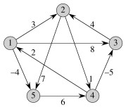
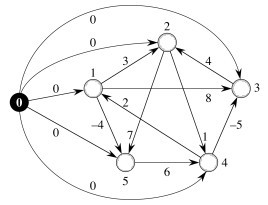
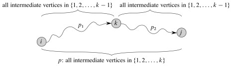

Outline
- All-Pairs Shortest Paths Introduction
- Using Single-Source Algorithms
- Johnson's Bright Idea
- Floyd-Warshall: Dynamic Programming for Dense Graphs
- Transitive Closure (Briefly Noted)
All-Pairs Shortest Paths
The problem is an extension of Single-Source Shortest Paths to all sources. We start by repeating the definition.
Path Weights and Shortest Paths
Input is a directed graph G = (V, E) and a weight function w: E -> ℜ. Define the path weight w(p) for p = ⟨v0, v1, ... vk⟩ to be the sum of edge weights on the path:

The shortest path weight from u to v is:

A shortest path from u to v is any path such that w(p) = δ(u, v).
All-Pairs Shortest Paths
Then the all-pairs shortest paths problem is to find a shortest path and the shortest path weight for every pair u, v ∈ V.
(Consider what this means in terms of the graph shown above right. How many shortest path weights would there be? How many paths?)
Applications
An obvious real world application is computing mileage charts.
Unweighted shortest paths are also used in social network analysis to compute the betweeness centrality of actors. (Weights are usually tie strength rather than cost in SNA.) The more shortest paths between other actors that an actor appears on, the higher the betweeness centrality. This is usually normalized by number of paths possible. This measure is one estimate of an actor's potential control of or influence over ties or communication between other actors.
All-Pairs Shortest Paths Using Single-Source Algorithms
Since we already know how to compute shortest paths from s to every v ∈ V (the Single Source version from the last lecture), why not just iterate one of these algorithms for each vertex v ∈ V as the source?
That will work, but let's look at the complexity and constraints.
Iterated Bellman-Ford
Bellman-Ford is O(V E), and it would have to be run |V| times, so the cost would be O(V2E) for any graph.
- On dense graphs, |E| = O(V2), so this would be O(V4). Ouch!
- But it will work on graphs with negative weight edges.

Iterated Dijkstra
On sparser graphs, Dijkstra has better asymptotic performance. Dijkstra's is O(E lg V) with the binary min-heap (faster with Fibonacci heaps).
- |V| iterations gives O(V E lg V), which is O(V3 lg V) in dense graphs (already better), and will be lower in very sparse graphs. (This can be done in O(V2 lg V + VE) with Fibonacci heaps.)
- But it will not work on graphs with negative weight edges.
What a pity. But why can't we just get rid of those pesky negative weights?
Eliminating Negative Weights
*Proposal: * How about adding a constant value to every edge?
- Find the smallest (most negative) weight, and negate it to get a positive number c.
- Add c to every edge weight. (If we are using a matrix representation in which a sentinel value such as ∞ is used to represent the absence of an edge, this value is not changed.)
- Every weight will be 0 or more, i.e., non-negative.
Since we have added the same constant value to everything, we are just scaling up the costs linearly and should obtain the same solutions, right?
For example, in this graph the shortest path from s to z is s--x--y--z,
but Dijkstra's algorithm can't find it because there is a negative weight
(why? what goes wrong?):

So, let's add 10 to every edge:
and the shortest path is .... Oops! s--z!
The strategy suggested above does not work because it does not add a constant amount to each path; rather it adds a constant to each edge and hence longer paths are penalized disproportionately.
Perhaps because of this, the first algorithm for all-pairs shortest paths (in the 1960's) by Floyd based on Warshall's work took a dynamic programming approach. (We'll get to that later.) But then Johnson had a bright idea in 1977 that salvaged the greedy approach.
Johnson's Bright Idea
Donald Johnson figured out how to make a graph that has all edge weights ≥ 0, and is also equivalent for purposes of finding shortest paths.
Definitions
We have been using a weight function w : V⊗V -> ℜ that gives the weight for each edge (i, j) ∈ E, or has value ∞ otherwise. (When working with adjacency list representations, it may be more convenient to write w : E -> ℜ and ignore (i, j) ∉ E.)
We want to find a modified weight function ŵ that has these properties:
For all u, v ∈ V, p is a shortest path from u to v using w iff p is a shortest path from u to v using ŵ.
(A shortest path under each weight function is a shortest path under the other weight function.)For all (u, v) ∈ E, ŵ(u, v) ≥ 0.
(All weights are non-negative, so Dijkstra's efficient algorithm can be used.)
If property 1 is met, it suffices to find shortest paths with ŵ. If property 2 is met, we can do so by running Dijkstra's algorithm from each vertex. But how do we come up with ŵ? That's where Johnson can help ...
Johnson figured out that if you add a weight associated with the source and subtract one associated with the target, you preserve shortest paths.

Reweighting Lemma
Given a directed, weighted graph G = (V, E), w : E -> ℜ, let h be any function (bad-ass lemming don't care) such that h : V -> ℜ.
For all (u, v) ∈ E define
*ŵ(u, v) = w(u, v) + h(u) − h(v). *
Let p = ⟨v0, v1, ..., vk⟩ be any path from v0 to vk.
Then p is a shortest path from v0 to vk under w iff p is a shortest path from v0 to vk under ŵ.
Furthermore, G has a negative-weight cycle under w iff G has a negative-weight cycle under ŵ.
Proof: First we'll show that ŵ(p) = w(p) + h(v0) − h(vk); that is, that the defined relationship transfers to paths.

Therefore, any path from v0 to vk has ŵ(p) = w(p) + h(v0) − h(vk).
Since h(v0) and h(vk) don't depend on the path from v0 to vk, if one path from v0 to vk is shorter than another with w, it will also be shorter with ŵ.
Now we need to show that ∃ negative-weight cycle with w iff ∃ negative-weight cycle with ŵ.
Let cycle c = ⟨v0, v1, ..., vk⟩ where v0 = vk. Then:

Therefore, c has a negative-weight cycle with w iff it has a negative-weight cycle with ŵ.
Implications: It's remarkable that under this definition of ŵ, h can assign any weight to the vertices and shortest paths and negative weight cycles will be preserved. This gets us Property 1. How can we choose h to get Property 2?
Johnson's h(v)
Property 2 states that ∀ (u, v) ∈ E, ŵ(u, v) ≥ 0.
Since we have defined ŵ(u, v) = w(u, v) + h(u) − h(v), to get property 2 we need an h : V -> ℜ for which we can show that w(u, v) + h(u) − h(v) ≥ 0.
The motivation for how this is done derives from a section on difference constraints in Chapter 24 that we did not cover, so we'll just have to take this as an insight out of the blue ....

Define G' = (V', E')
- V' = V ∪ {s}, where s is a new vertex.
- E' = E ∪ {(s, v) : v ∈ V}.
- w(s, v) = 0 for all v ∈ V.
Since no edges enter s, G' has the same cycles as G, including negative weight cycles if they exist.
*Define h(v) = δ(s, v) for all v ∈ V. *
(We put a 0-weighted link from _s to every other vertex v, so isn't δ(s, v) always 0? When is it not? What does this tell us?)_
Correctness (proof that we have property 2)
Claim: ŵ(u, v) = w(u, v) + h(u) − h(v) ≥ 0.
Proof: By the triangle inequality,
δ(s, v) ≤ δ(s, u) + w(u, v),
Substituting h(v) = δ(s, v) (as defined above) and similarly for u,
h(v) ≤ h(u) + w(u, v).
Subtracting h(v) from both sides,
w(u, v) + h(u) − h(v) ≥ 0.
The Algorithm
The algorithm constructs the augmented graph G' (line 1), uses Bellman-Ford from s to check whether there are negative weight cycles (lines 2-3), and if there are none this provides the δ(s, v) values needed to compute h(v) (lines 4-5).
Then it does the weight adjustment with h (lines 6-7), and runs Dijkstra's algorithm from each start vertex (lines 9-10), reversing the weight adjustment to obtain the final distances put in a results matrix D (lines 11-12).
Example
Let's start with this graph:
First we construct G' by adding s (the black node) and edges of weight from s 0 to all other vertices. The original weights are still used. This new graph G' is shown to the right. Vertex numbers have been moved outside of the nodes.
Then we run Bellman-Ford on this graph with s (the black node) as the start vertex. The resulting path distances δ(s, v) are shown inside the nodes to the right. Remember that h(v) = δ(s, v), so that these are also the values we use in adjusting edge weights (next step).

In the next graph to the left, the edge weights have been adjusted to ŵ(u, v) = w(u, v) + h(u) − h(v). For example, the edge (1, 5), previously weighted -4, has been updated to -4 + 0 − (-4) = 0.
All weights are positive, so we can now run Dijkstra's algorithm from each vertex u as source (shown in black in the next step) using ŵ.
To the right is an example of one pass, starting with vertex 2.
Within each vertex v the values δ̂(2, v) and δ(2, v) = δ̂(2, v) + h(2) − h(u) are separated by a slash.
The values for δ̂(2, v) were computed by running Dijkstra's algorithm with start vertex 2, using the modified weights ŵ. But to get the correct path lengths in the original graph we have to map this back to w.
Of course, node 2 is labeled "0/0" for δ̂(2, 2) and δ(2, 2), respectively, because it costs 0 to get from a vertex to itself in any graph that does not have negative weight cycles.
The cost to get to vertex 4 is 0 in the modified graph. To get the cost in the original graph, we reverse the adjustment that was done in computing w': we now subtract the source vertex weight h(2) = -1 (from figure above) and add the target vertex weight h(4) = 0, so 0 − (-1) + 0 = 1. That is where the "1" on node 4 came from.
But that example was for a path of length 1: let's look at a longer one. Node 5 has "2/-1". Dijkstra's algorithm found the lowest cost path ((2, 4), (4, 1), (1, 5)) to vertex 5, at a cost of 2 using the edge weights w'. To convert this into the path cost under edge weights w, we do not have to subtract the source vertex weight h(u) and add the target vertex weight h(v) for every edge on the path, because it is a telescoping sum. We only have to subtract the source vertex weight h(2) = -1 for the start of the path and add the target vertex weight h(5) = -4 for the end of the path.
Thus δ(5) = δ̂(5) − h(2) + h(5) = 2 − (-1) + (-4) = -1.
Similarly, the numbers after the "/" on each node are δ(v) in the original graph: these are the "answers" for the start vertex used in the given Dijkstra's run. We collect all these answers in matrix D across all vertices.
Time
Θ(V) to compute G'; O(V E) to run Bellman-Ford; Θ(E) to compute ŵ; and Θ(V2) to compute D; but these are all dominated by O(V E lg V) to run Dijkstra |V| times with a binary min-heap implementation.
Not surprisingly, this is the same as iterated Dijkstra's, but it will handle negative weights.
Asymptotic performance can be improved to O(V2 lg V + V E) using Fibonacci heaps.
Dynamic Programming Approaches and Matrix Multiplication
We should also be aware of dynamic programming approaches to solving all-pairs shortest paths. We already saw in Topic 18 that any subpath of a shortest path is a shortest path; thus there is optimal substructure. There are also overlapping subproblems since we can extend the solution to shorter paths into longer ones. Two approaches differ in how they chararacterize the recursive substructure.
CLRS first develop a dynamic programming solution that is similar to matrix multiplication. Matrices are a natural representation for all-pairs shortest paths as we need O(V2) memory elements just to represent the final results, so it isn't terribly wasteful to use a non-sparse graph representation (although for very large graphs once can use a sparse matrix representation).
Optimal Substructure
A shortest path p between distinct vertices i and j can be decomposed into a shortest path from i to some vertex k, plus the final edge from k to j. In case that i is directly connected to j, then k=j and we define the length of a shortest path from a vertex to itself to be 0.
Extending Shortest Paths
This dynamic programming approach builds up shortest paths that contain at most m edges. For m = 0, all the shortest paths from vertices to themselves are of length 0; and others are infinite. For m = 1, the adjacency matrix gives the shortest paths between an pair of vertices i and j (namely, the weight on the edge between them). For m > 1, an algorithm is developed that takes the minimum of paths of length m−1 and those that can be obtained by extending these paths one more step via an intermediate vertex k.
We will leave the details to the text, but it turns out that this algorithm for extending paths one step has structure almost identical to that for multiplying square matrices. The operations are different (min instead of addition, addition instead of multiplication), but the structure is the same. Both algorithms have three nested loops, so are O(V3).
After |V|−1 extensions, the paths will not get any shorter (assuming no negative weight edges), so one can iterate the path extending algorithm |V|−1 times, for an O(V4) algorithm overall: not very efficient.
However, the path extension algorithm, like matrix mutliplication, is associative, and we can use this fact along with the fact that results won't change after |V|−1 extensions to speed up the algorithm. We modify it to be like repeated squaring, essentially multiplying the resulting matrix by itself repeatedly. Then one needs only lg(V) "multiplications" (doubling of path length) to have paths longer than |V|, so the runtime overall is O(V3 lg V).
But we can do better with a different way of characterizing optimal substructure; one that does not just extend paths at their end, but rather allows two paths of length greater than 1 to be combined.
Floyd-Warshall: Dynamic Programming for Dense Graphs
The textbook first develops a more complex version of this algorithm that makes multiple copies of matrices, and then notes in exercise 25.2-4 that we can reduce space requirements by re-using matrices. Here I go directly to that simpler version.
Dynamic Programming Analysis
Assume that G is represented as an adjacency matrix of weights W = (wij), with vertices numbered from 1 to n.

We have optimal substructure because subpaths of shortest paths are shortest paths (previous lecture), and we have overlapping subproblems because a shortest path to one vertex may be extended to reach a further vertex. We need the recursive structure that exploits this.
The subproblems are defined by computing, for 1 ≤ k ≤ |V|, the shortest path from each vertex to each other vertex that uses only vertices from {1, 2, ..., k}. That is:
- first find the shortest paths from each i to each j that go through no vertices (i.e., the direct edges);
- then find the shortest paths from each i to each j that go either direct or only via vertex 1;
- then find the shortest paths from each i to each j that go either direct or only via vertices 1 and 2; ...
- ... and so on until we are considering solutions via all vertices.
Importantly, each step we can use what we just computed in the previous step, considering whether the kth vertex improves on paths found using vertices {1 ... k-1}. This is what enables us to leverage dynamic programming's ability to save and re-use solutions to subproblems.
The basic insight is that the shortest path from vertex i to vertex j using only vertices from {1, 2, ..., k} is either:
- the shortest path p from vertex i to vertex j using only vertices from {1, 2, ..., k−1}, or
- a path p composed of the shortest path p1 from vertex i to vertex k using only vertices from {1, 2, ..., k−1} and the shortest path p2 from vertex k to vertex j using only vertices from {1, 2, ..., k−1}

This way of characterizing optimal substructure allows the Floyd-Warshall algorithm to consider more ways of combining shortest subpaths than the matrix-multiplication-like algorithm did.
Algorithm
This leads immediately to the classic Floyd-Warshall algorithm (as presented in excercise 25.2-4 and its public solution, as well as many other texts):
Run Time Analysis
It's trivial; you tell me.
Constructing the Shortest Paths
Although one can infer the shortest paths from the final weight matrix D, it is perhaps more straightforward to maintain a matrix of predecessor pointers just like we maintain predecessor pointers on individual vertices in the single-source version of shortest paths.
We update a matrix Π that is the same dimensions as D, and each entry πi,j contains the predecessor of vertex j on a shortest path from i (the predecessor on shortest paths from other vertices may differ).
The CLRS textbooks presentation shows us making a series of matrices Π(0) ... Π(n), but as with the weight matrix D we can actually do this in one matrix Π, and we can understand the superscripts (0) ... (n) as merely representing states of this matrix.
Example
Examples of Floyd-Warshall, like of other dynamic programming problems, are tedious to work through. I invite you to trace though the example in the text, following the algorithm literally, and be prepared to do another example on homework. I won't talk through it here.


Transitive Closure
Suppose we have a graph G and we want to compute the transitive closure
G* = (V, E*) of G, where (u, v) ∈ E* iff ∃ path from u to v in G.
We can do this by assigning a weight of 1 to each edge, running the above algorithm, and then concluding there is a path for any (i, j) that have non-infinite path cost.
If all we care about is transitivity rather than path length, we can reduce space requirements and possibly speed up the algorithm by representing all edges as boolean values (1 for connected; 0 for not connected), and then modify Floyd-Warshall to use boolean OR rather than min and AND rather than addition. This reduces the space requirements from one numeric word to one bit per edge weight, and may be faster on machines for which boolean operations are faster than addition. See text for discussion.
Dan Suthers Last modified: Fri Apr 11 02:23:25 HST 2014
Images are from the instructor's material for Cormen et al. Introduction to
Algorithms, Third Edition.